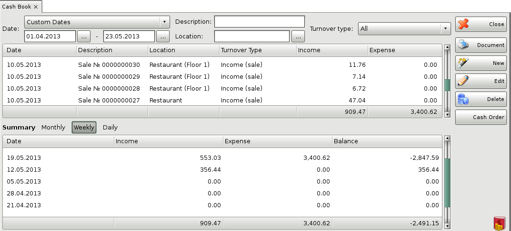
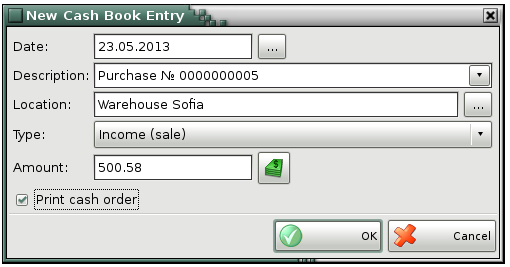
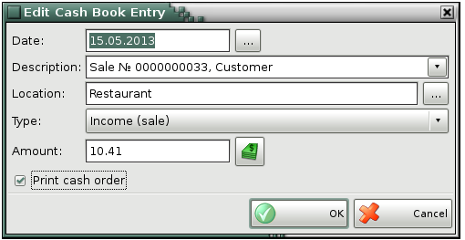
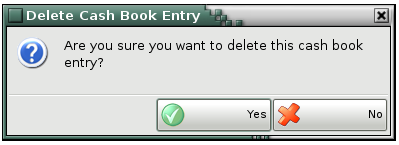

Cash book
The Cash book is a chronological diary of cash flows in the company. Each row represents an operation (income or expense) and contains the amount, the date, the type and a description. You can use the Cash Ledger to trace cash flows and to obtain information about the current financial status of the company. All sales and purchases are automatically filled in the Cash Ledger with their total amounts or the amounts that have been paid (upon saving an operation in the Payment window or by using the Payments module).

In the Date field you may select the date range for which you wish to visualize the payed documents Today, Yesterday, This week, Past week, Last week, This month, Past month, Last month, This year, Past year, Last year or Custom dates. The Date filter is active only when you select Custom and you may enter the desired start and end date.
Use the New button to add a new income or expense.

You can enter a date, short description, amount, location and type for each new element. The standard types are: Expense (purchase), Expense (consumation), Expense (rent), Expense, Income, Income (sale), Income (advance deposit), Unknown. When you fill in the Description field you can choose between the last five entered incomes/expenses.
You can print a cash note, if Print cash note is checked in the New income/expense window. You can print a Credit cash order or a Debit cash order, depending on the selected type of note.
To edit incomes or expenses, select the desired row and click on the Edit button. You can edit all fields.

To delete incomes or expenses, select the desired row and click on the Delete button or press the Delete key.

�2006-2015 Microinvest, All rights reserved